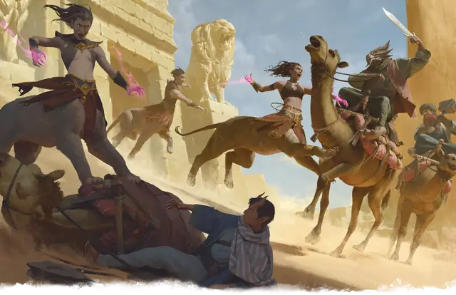

Ламия
Lamia
Большое Исчадие, Хаотичное Злое

Класс Защиты 13 Инициатива +1 (11)
Хиты 97 (13к10 + 26)
Скорость 40 футов
| мод | спас | ||
|---|---|---|---|
| СИЛ | 16 | +3 | +3 |
| ЛОВ | 13 | +1 | +1 |
| ТЕЛ | 15 | +2 | +2 |
| мод | спас | ||
|---|---|---|---|
| ИНТ | 14 | +2 | +2 |
| МДР | 15 | +2 | +2 |
| ХАР | 16 | +3 | +3 |
Чувства Тёмное зрение 60 футов, пассивное Восприятие 12
Языки Общий, Бездны
Опасность 4 (1 100 опыта; БВ +2)
Действия
Мультиатака. Ламия совершает две атаки Когтями. Она может заменить одну из этих атак на использование Тлетворного касания.
Когти. Бросок рукопашной атаки: +5, досягаемость 5 фт. Попадание: 7 (1к8 + 3) Рубящего урона плюс 7 (2к6) Психического урона.
Тлетворное касание. Спасбросок Мудрости: Сл 13, одно существо, которое ламия видит в пределах 5 футов. Провал: 13 (3к8) Психического урона, и цель проклята на 1 час. Пока длится проклятие, цель Очарована и Отравлена.
Сотворение заклинаний. Ламия сотворяет одно из следующих заклинаний, не нуждаясь в Материальных компонентах (заклинательная характеристика — Харизма, Сл спасброска заклинаний 13):
Неограниченно: Малая иллюзия, Маскировка, Среднего размера
1/день каждое: Гейс, Наблюдение, Образ
Бонусные действия
Прыжок. После разбега в 10 футов ламия может прыгнуть на расстояние до 40 футов.
Бонус мастерства +2
Среда обитания Пустыня
Сокровища Магические
Ламия
Проклятая посредница и расхитительница руин
Легенды гласят, что первая ламия была амбициозной правительницей, заключившей тёмный договор с демоническим владыкой Граз'зтом в обмен на бессмертное величие. В результате она превратилась в чудовище с телом льва, чьё прикосновение накладывает проклятие.
Все остальные ламии произошли от этой печально известной правительницы или сами стали жертвами подобных сделок. Они часто селятся возле древних развалин и ищут в них таинственную магию, которая поможет им обрести богатство и власть. С помощью магических иллюзий и чар ламии обманывают и подчиняют окружающих. Иногда они вступают в сговор с бандитами, чтобы похищать путешественников. Заложников обещают отпустить, если те согласятся заключить опасную сделку. Совершите бросок по таблице «Договор с ламией» для вдохновения или выберите сами желание ламии.
Договор с ламией
| 1к6 | Сделка с ламией вынуждает вас... |
| 1 | Принести ей предмет, принадлежащий правителю или дворянину. |
| 2 | Нарисовать карту подземелья или руин. |
| 3 | Провести её через ворота ближайшего поселения. |
| 4 | Установить странный идол в определённом месте или доме. |
| 5 | Снять с магического предмета проклятие, а затем вернуть его. |
| 6 | Сразить чудовище и принести определённый орган. |